バーンラン（Burn Run）＝新アサインメント。爆弾を積んだ車で、炎に包まれたアーチのコースを制限時間内に走り抜けるタイムアタック。道中のFear系の敵・オブジェクトを轢くと時間が延長され、修理レンチやスピードブーストで車を維持しながらゴールを目指します。
エキゾチックアビリティブースト＝メジャー／マイナーアビリティを強化する新システム。クールダウン短縮・追加弾薬・追加ダメージ属性などが付与されます。アイテムケースから入手でき、主にナイトメア地点のアクティビティ／アサインメントで出やすい（Tacマップの報酬一覧で確認可）。各アビリティに2種のブーストがあり、ワイプするかアビリティを付け替えるまで維持されます。
※シーズン5ではエンドゲーム無料開放が継続。シーズン6以降はBO7所有者限定になる予定（公式パッチノート）。シーズン5では新しい「グリッチ」の追加はありません。
4人までのスクアッドを組み、最大32人が参加できる設計で、難易度が上がるゾーンを攻略しながら戦闘評価やスキルツリーを育て、成果を持ち帰るために脱出を目指す、脱出系シューター的なルールです。アヴァロンの広大な地を探索し、謎の毒素で汚染された危険地域を戦い抜きながら、ギルドの残存司令部を突き止めていきます。
バーンランは、爆弾を積んだ車で炎のアーチのコースを制限時間内に走破するミッション。戦闘ではなく“レース”として走るのがクリアのコツです。
出現場所は3か所（ハイタウン・ロータウン・旧武器庫）。ハイタウンの短めのコースが練習向きです。
時間・耐久の管理（拾う・轢く）
| 対象 | 効果 |
|---|---|
| Fearエネミーを轢く | 時間＋数秒 |
| 道中のオブジェクト接触 | 時間追加 |
| 浮遊レンチ | 車両を完全修理 |
| 炎を纏った浮遊タイヤ | スピードブーストをストック |
| 炎の樽（味方が撃つ） | 時間稼ぎ（チーム時） |
コツ
報酬
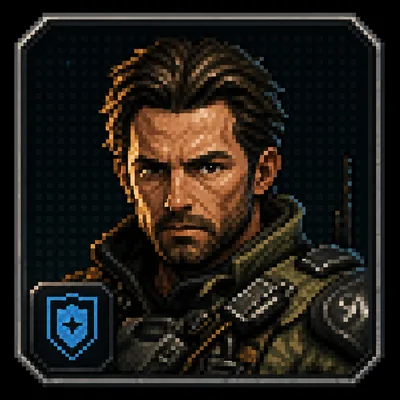
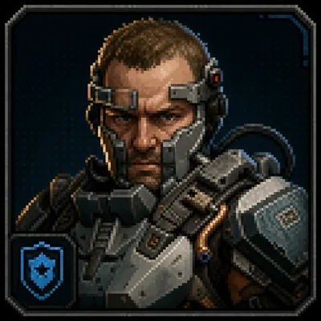
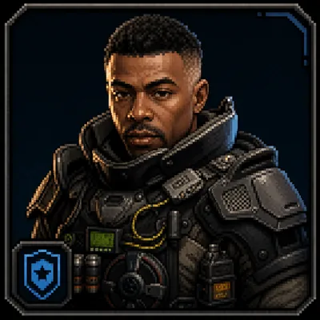
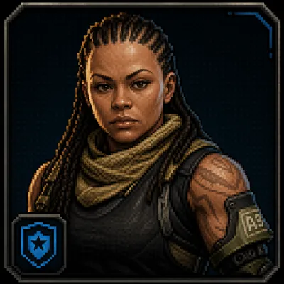
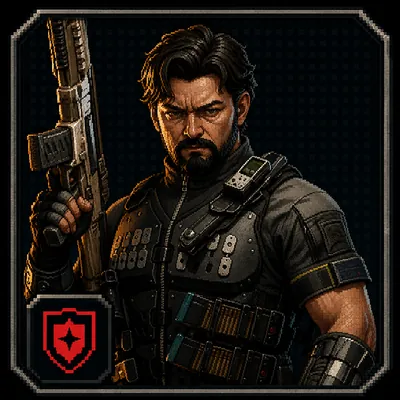
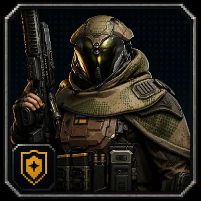
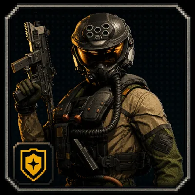
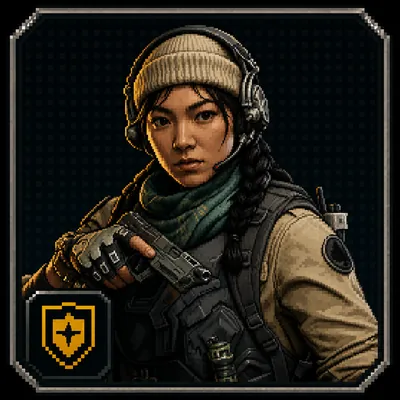
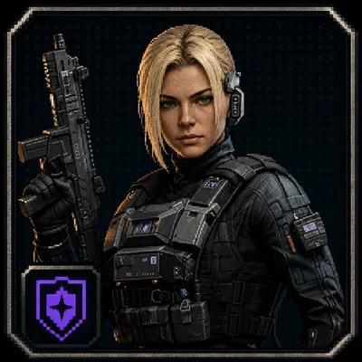
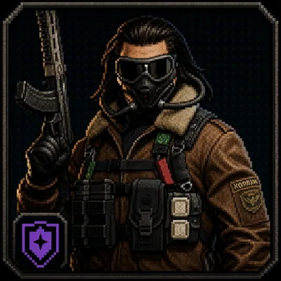
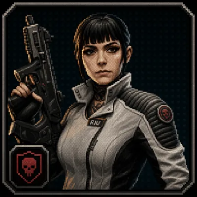
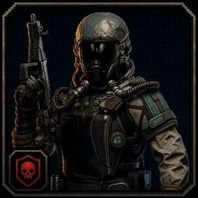
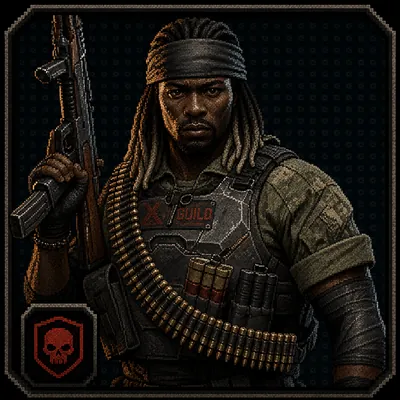
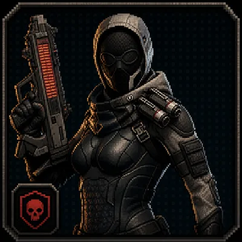
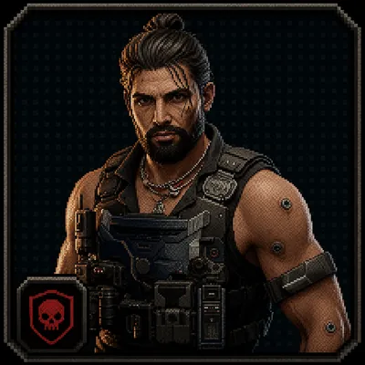
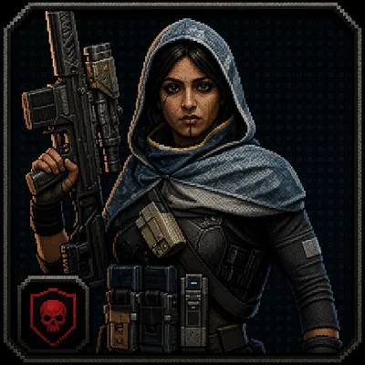
まず「誰を・何を倒すのか」を把握するためのパート。エネミーとワールドボスの一覧です。
カードをクリックすると詳細（特徴・攻撃パターン）が開きます。
カードをクリックすると詳細（出現条件・攻略・報酬）が開きます。
モードの目標：「出発して50分以内に生きて帰る」。チームプレイ推奨。
| 項目 | 内容 |
|---|---|
| 死亡時のペナルティ | 死亡などで任務に失敗すると、その試合で上げたレベル（レベルアップで習得したスキルを含む）と現地入手武器をすべて失う。ただし「復元トークン」（イベントパスやミッション報酬で入手）を持っていれば現地入手武器の消失を防げる |
| チームプレイのメリット | チームを組んでいる場合、倒れてもミッション失敗にはならず、リスポンできる（ソロだとミッション失敗になりやすい） |
| ロードアウト武器の扱い | 任務の成功・失敗に関わらず、常に設定・使用可能 |
| 現地入手武器の制限 | アタッチメントの設定などのカスタマイズはできない |
| レベルMAX到達後の隠し仕様 | 通常のレベル上限に達すると経験値を貯めてもレベルが上がらなくなる。グリッチ(Glitch)をクリアするとスキル選択画面が表示され、「既存スキルのレベルを+1する」か「新しいナイトメアスキルを追加する」かを選択できる。このスキル選択がオペレーターレベルの上昇に連動しており、結果としてグリッチを3回クリアするとレベルが+3される仕組みになっている（ユーザー実機確認） |
| グリッチ(Glitch)への参加方法 | ソロクリアは相当な実力が必要な高難度ミッション。マップ内チャットで「グリッチ行きませんか？」といった募集が英語・中国語で行われることが多く、日本語チャットはほぼ見られない。参加するには翻訳しながらチャットするか、マッチしたチームメンバーとマップ上のグリッチ地点にマーキングしてアピールするなどの対応が必要。 【Xboxでの翻訳手順例（ユーザー実践）】 ①スマートフォンの翻訳アプリのカメラ翻訳でゲーム画面のチャット内容を確認 → ②返信メッセージを翻訳アプリで翻訳してコピー → ③スマートフォンのXboxアプリ（本体リモート操作画面）でメッセージ欄にペーストしてゲーム内に送信（※上記はXboxでの一例） |
どちらも「レベル・スキルをリセットする」機能ですが、実行条件と失うものが異なります。混同しやすいので比較表でまとめました。
オペレータープレステージが可能になる3条件（＝入手元）
| 項目 | オペレータープレステージ | 「復帰をリセット」（アビリティ＆スキル画面／LSボタン） |
|---|---|---|
| 実行条件 | レベルMAX到達＋エキゾチックスキルLv3＋ナイトメアスキルLv3。すべて満たすと「プレステージ可能」の表示が出る | 条件なし。いつでも実行可能 |
| 回数制限 | 最大3回まで（公式パッチノート情報） | 制限なし。プレステージの残り回数は消費しない |
| レベル・スキルトラック | 0に戻る（エキゾチック・ナイトメア含む） | 同様にリセットされる |
| 現地入手武器 | 厳選した武器も消失 | 影響なし |
| ロードアウト武器 | ノーマルランクに戻る | 影響なし |
| アビリティブースト（メジャー／マイナー） | 消える（ユーザー実機確認） | 消えずに残る（ユーザー実機確認） |
グリッチ募集は英語・中国語で飛び交います。実プレイで頻出のやり取りをまとめました。
| 表記 | 意味 | 補足・返し方 |
|---|---|---|
| glitch? | グリッチやる人？（募集） | 最頻出。参加するなら「1」と返す |
| 1 | OK・参加する・了解 | 中国系ネット由来の返事。逆に「2」は「無理・不参加」 |
| where? ／ どこ？ | 集合場所どこ？ | 返事は下の「場所の略称」で来ることが多い |
返ってくる「場所の略称」＝グリッチ名・実際の場所（ランドマーク）の対応です。
| 名称 | 内容 | 備考 |
|---|---|---|
| バーンラン（Burn Run）シーズン5 | 爆弾搭載車で炎のアーチのコースを制限時間内に走破する新アサインメント。Fear系の敵・オブジェクトを轢くと時間延長。修理レンチ・スピードブーストで車を維持 | 2026/07/23（シーズン5）実装。公式パッチノート情報 |
| パワーノード回収（ウィークリーミッション） | 「パワーノードを回収せよ」というウィークリーミッション。パワーノードは建物の上などにある、青く光るキューブ型のオブジェクト | 検索しても情報が出てこなかったため、実プレイで確認した情報 |
| 潜入アクティビティ：「敵の物体」を破壊する | エリア内で敵モンスターが何かに擬態している。探して撃つと正体を現すので、それを倒す | 正解となる擬態対象の法則はまだ不明。確認例：エリア3の家の中にあるソファ |
アヴァロン島のタクティカルマップです。赤いピンは、実機確認済みのグリッチ発生場所（固定ランドマーク）を示しています。個人作成の参考マップで、公式マップの転載ではありません。
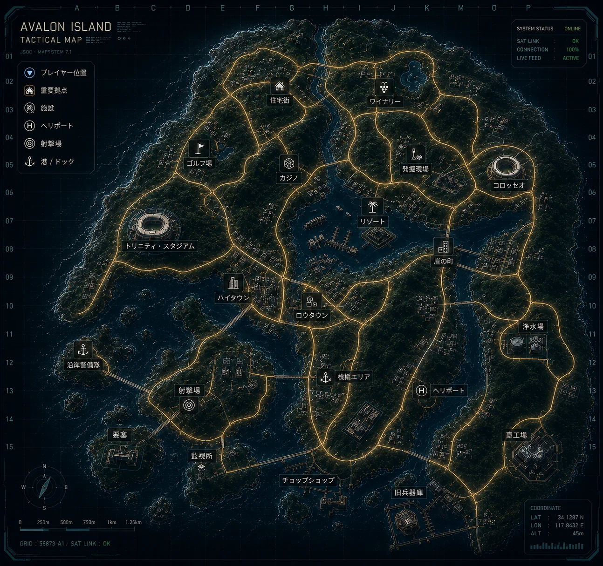
グリッチ（グリッチフラクチャー）は、通常のアヴァロンマップ外で行われる特殊アクティビティ。対応オペレーションをクリアし、同じ試合でギルドストライクボスを倒すと出現します。発生場所は多くが固定のランドマーク（実機確認済み）。カードをクリックすると各グリッチの詳細が開きます。
グリッチカードをクリックすると詳細が開きます。
| カテゴリ | 内容 |
|---|---|
| 名前付きエキゾチック武器の所持制限 | 現地調達の名前付きエキゾチック武器（銃器）は1つしか所持できない。新しいものを拾うと所持中のものと交換される。近接武器は別枠のため、銃器とは別に1つ所持可能 |
| エキゾチックファブリケーターの注意点 | ユーティリティボーナスの変更は必ず元に戻せるとは限らない可能性あり。実例:デュアルアクション→デュアルVELOX5.7変更後、再アクセス不可に |
| 現地入手のエキゾチック武器のエキゾ効果（Rounds） | 現地入手のエキゾチック銃器は、付与されているRounds効果が武器の説明文と一致しないことがよくある。ランダムに決定される仕様と思われる |
| エキゾチックアビリティブースト | メジャー／マイナーアビリティを強化する追加効果（クールダウン短縮・追加弾薬・追加ダメージ属性など）。アイテムケースから入手し、主にナイトメア地点で出やすい。各アビリティに2種あり。 |
| 用語：Affinity Exotic | 名前付きエキゾチックが、対応する属性(Rounds)を伴った状態で発見された場合の呼称（海外コミュニティの非公式用語）。この判定は発見した時点のRoundsで決まり、後からファブリケーターでRoundsだけをリロールしても「Affinity Exotic」の資格は失われない |
| 用語：Affinity Utility Bonus | Affinity Exoticになると、対応する属性専用のユーティリティボーナス（属性一致ボーナス）を確率で引く可能性が生まれる（保証ではない）。ファブリケーターでこのボーナスだけを狙ってリロールすることも可能（海外報告では26回失敗した例もあり、根気が必要） |
個別の表に入る前に、エキゾチック強化の「しくみ」を1枚で。ポイントは、Rounds属性とユーティリティボーナスは特定の武器の専売ではなく、どの武器（ロードアウト武器を含む）にも付与できる共通レイヤーだということです。
エキゾチック武器は、特定のワールドボスを撃破すると入手できます。
| 撃破するボス | 入手できるもの |
|---|---|
| ワールドボス「フォークナー」 | エキゾチック武器ケースが確定ドロップ |
| ワールドボス「ズーサ」 | エキゾチック武器ケースが確定ドロップ |
| メガアボミネーション | 3000パワー＋エキゾチック（特殊）武器 |
エキゾチック武器を数多く集めたいなら、メガアボミネーション周回が有効です。

武器に付与可能な8種類の弾薬属性（Affinity）。ロードアウト武器を含む、どの武器にも付与できます。
属性アイコンをクリックすると効果の詳細が開きます。
各武器で入手できるエキゾチック特性（ユーティリティボーナス）の一覧です。各カードに、その武器に付くボーナスをすべて表示しています。
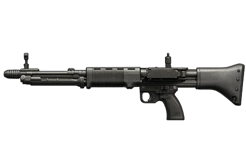
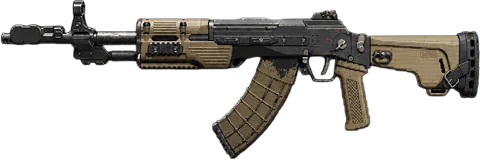
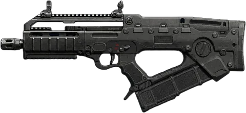
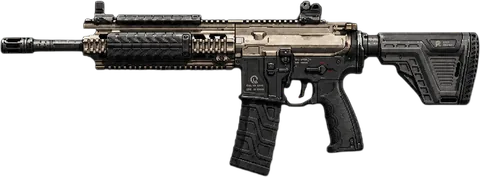
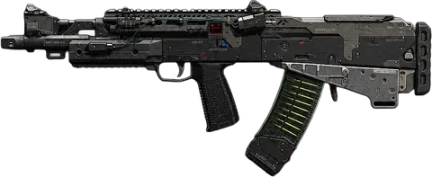
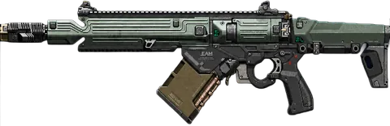
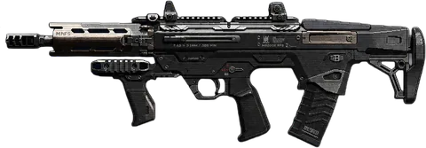
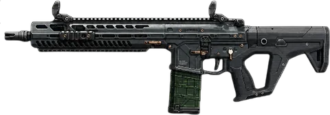
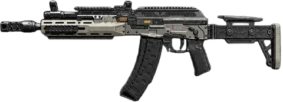
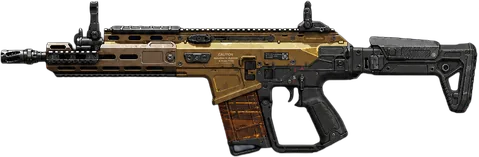
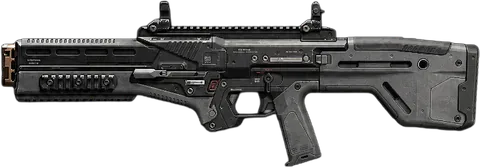
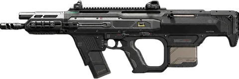
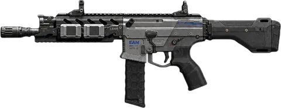
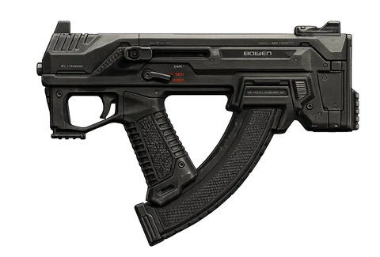
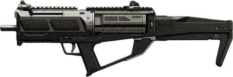
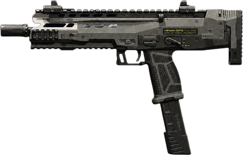
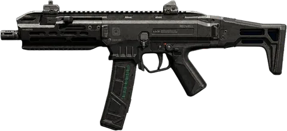
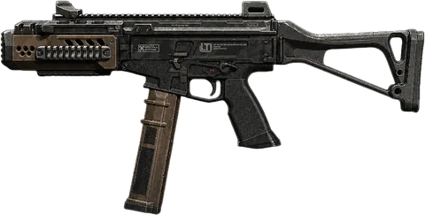
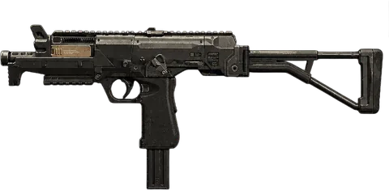
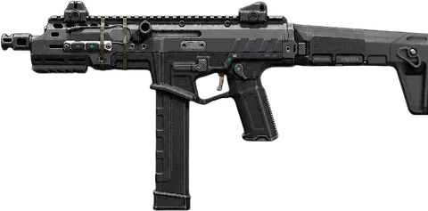
属性に関係なく出現する汎用ボーナス。アイコン（グループ）ごとにまとめています。
| 高速Lightspeed | あらゆる移動速度が上昇 |
| LIFESTYLELifestyle | ヘッドショットで敵をキルするとHPが回復 |
| ウルトラライト | エイム中のプレイヤーの移動速度が低下しない |
| キル&ラン | 敵をキルすると一時的に移動速度がブースト |
| コンバットレディ | エイムとダッシュ後の射撃速度が大幅に向上 |
| 高速射撃 | 武器の連射速度が上昇 |
| ガンマン | 腰だめ撃ち時のばらつきと反動が大幅に向上 |
| リロード切替 | 武器が交換時に常にリロードされる |
| 激化Escalation | トリガーを長く引くほど連射速度が向上 |
| 腰だめ撃ち地獄 | 腰だめ撃ちのダメージが増加 |
| 狙い撃ちSharpshooter | 上半身に命中するとヘッドショットと同じダメージを与える |
| スラッシャー | 近接攻撃を繰り出す速度が向上 |
| グレネード弾 | 弾丸が爆発し、追加の範囲ダメージを与える |
| 炸裂弾Explosive Bullets（推定） | 弾丸が爆発し、追加の範囲ダメージを与える |
| Velox Akimbo 5.7表示は「デュアルVELOX 5.7」 | 対象武器がデュアル武器（2丁持ち）になる |
| ショットガニフィケーターShotgunificator | 武器の弾が拡散するようになる |
| Parry（パリー）未ローカライズ | 強近接攻撃チャージ中の被ダメージを軽減（近接武器専用）。海外wikiの武器対応表では「紫」表記＝エキゾチック武器ケース限定の専用ボーナス |
| 撃ち放題 | 全ての弾薬が1つの大きなマガジンに入っている |
| 弾薬リチャージャー | 武器の収納中に弾薬が補充される |
| 廃棄物ゼロZero Waste | 弾丸を発射しても50%の確率で弾薬を消費しない |
| 弾薬減少 | キル後に弾薬をマガジンに追加 |
| ロングバーストLongburst | 各バーストで発射する弾の数が増える |
| 近接リロード | 近接ヒット後、すぐに武器のマガジンが充填される |
| 反動削除 | 反動制御が大幅に向上 |
| ロングショット | 射程距離が大幅に向上。反動をわずかに軽減 |
【謎が解明・海外wiki情報】「Affinity Exotic」（対応する属性で発見された個体）の判定は発見時点のRounds属性で決まり、ファブリケーターでのリロール後も変わらない。Affinity Exoticは対応する属性一致ボーナスを確率で引く（保証ではない）ため、同じ個体でも出たり出なかったりする。これらのボーナスの多くは標準ユーティリティボーナスより弱いとされ、強さ目的ではなくレア度・見た目狙いで集めるものとされている。
| 属性 | ボーナス名（英語／日本語） | 効果 |
|---|---|---|
| Flash Freeze （未確認） | 凍結弾が複数の敵に同時発動することがある（未確認） | |
| Ice Cloud 氷雲 | 凍結した敵をキルすると、敵の動きを鈍らせる雲が残ることがある | |
| Black Hole ブラックホール | 重力子弾がブラックホールを作り出して敵を吸い込んだ後、近くの生存者達をテレポートさせる | |
| Warp （未確認） | ワープした敵がダメージを与え、周囲の敵を巻き込む（未確認） | |
| Firebomb （未確認） | 燃焼中の敵を倒すと爆発する（未確認） | |
| Petrol （未確認） | 熱子弾が地面に炎だまりを残す（未確認） | |
| Fire Wheel （未確認） | 敵の周囲を回転する火の輪を2つ生成する（未確認） | |
| Starburst スターバースト | 花閃弾が爆発し、敵にフレアを放つ | |
| Mass Disruption 大規模妨害 | 味方になっている敵が一定確率で他の敵を味方につける | |
| Neural Attraction 神経の引力 | 味方になっている敵が他の敵の注意を一時的にそらす | |
| Blessing （未確認） | ヒールグリフに一時的なボーナス体力が付くことがある（未確認） | |
| Dual Action デュアルアクション | ヒールグリフ消費で体力自動回復が一時的に向上 | |
| Chain Lightning チェーンライトニング | スタン効果を周囲の敵に拡散する | |
| Lightning Strike （未確認） | 上空から雷が落ち、敵をスタンさせる（未確認） | |
| Blast Chain ブラストチェイン | アーマーを破壊する爆発が発生すると、追加の爆発が3回連続で発生 | |
| Blast Shield （未確認） | 榴散弾が複数の敵に命中すると、被ダメージが軽減される（未確認） | |
| 全属性共通 | Big Game ビッグゲーム | 対応する属性の効果がエリートエネミーにも発動するようになる（属性ごとに個別のBig Gameが存在） |
エンドゲームに存在する名前付きエキゾチック武器と、その元になる武器の一覧です。属性(Rounds)はドロップごとにランダムに決まるため、この表では割愛しています。
| エキゾチック名 | 武器名 |
|---|---|
| Flashburst | M8A1 |
| Zeotrope | Echo 12 |
| Continuum | Hawker HX |
| Torrent | M15 Mod 0 |
| Collateral | EGRT-17 |
| Overcharge | M10 Breacher（未確認） |
| Criticality | A.R.C. M1 |
| Redline | XM325 |
| Ghostmind | VS Recon |
| Neurowall | Warden 308 |
| Malspike (表記:MALSPIKE) | VELOX 5.7 |
| Swarmforge | MPC-25 |
| Backdrive | Dravec 45 |
| Hypersurge | Sokol 545 |
| Reboot | 1911 |
| Barrage | Razor 9mm |
| Killswitch | AK-27 |
| Pulsebreach | Swordfish A1 |
| Cryoshear (表記:CRYOSHEAR) | KATANA（近接武器） |
| DEFRAG（表記のまま） | MK35 ISR（未確認） |
| Kilonova | VST（未確認） |
| Infraradiance | SG-12（未確認） |
| 武器 | ボーナス | 状態 |
|---|---|---|
| 1911 | グレネード弾／炸裂弾 | 他のハンドガンでは未確認。属性一致枠とは別の武器固有枠の可能性（仮説・要検証） |
エンドゲームを初めて遊ぶ人が、世界観にグッと入り込めるように——各シーズンの物語の流れをまとめました。
キャンペーン本編では、デイビッド・メイソン率いるJSOCがギルドを打倒し、「敗北の灰から這い上がる」ほどの大打撃を与えます。しかしその隙を突いたのが、CEOエマ・ケーガンの信頼できる右腕だったアルデン・ドーンでした。
ドーンは無慈悲なクーデターを起こし、ケーガンを永久追放して自らギルドの新たなトップの座に就きます。彼のビジョンには一切の情け容赦がなく、あらゆる犠牲を払ってでもデイビッド・メイソンを捕らえ、JSOCエリートだけが持つ最先端の神経技術「電脳リンク（C-Link）」に埋め込まれた秘密を解き明かすことを目論みます。公式の煽り文句を借りると、これは単なる復讐ではなく「血と野望に導かれた新時代の幕開け」とされています。
シーズン1のエンドゲームに実装された討伐イベントの相手は、ギルドのバイオエンジニアリング部門責任者ギデオン・フォークナー博士。彼は前作BO6の主人公ウィリアム・"ケース"・カルデロンの遺体をギルドが回収し、そこから威力を最大限まで増幅させて生み出した巨大兵器「アヴァロンの巨像（ロボットHEL-A27）」を操っていました。プレイヤーはアヴァロン各地でこの巨大ロボットの信号を追い、コアを破壊することでイベントをクリアします。
「ギルドは倒れたが、まだ終わっていない」という煽り文句で幕を開けます。新たなトップとなったアルデン・ドーンには、秘密兵器とも言うべき重要な協力者がいました。神経科学者ヴィクトリア・アットウッドです。
シーズン1のクーデターでデイビッド・メイソンを拘束したドーンは、アットウッドと緊密に連携し、メイソンの精神を利用して電脳リンク（C-Link）技術の再現を試みる「プロジェクト・シナプス」を始動させます。
ドーンはJSOCチームの根絶を狙い、アヴァロン各地に隠しておいたクレードル（貯蔵庫）を起爆させる「ギルドストライク」を仕掛けてきます。これが発生すると、その一帯は通常より遥かに危険な「ナイトメアゾーン」と化し、討伐対象となる「ストライクボス」が出現します。シーズン中盤にはさらに深い仕掛けとして「グリッチ」が追加されました。ストライクボスを倒すと発生することがある、地図外の隔離された体験で、プレイヤーは破損・汚染されたC-Linkデータの中に引きずり込まれ、複数ウェーブの敵を凌いで「グリッチボス」を倒す必要があります。
カルマは、ギルドへの反撃として"ジャベリン"ことコール・ドノヴァンという工作員を送り込みます。ジャベリンは北極圏上空の国際空域からギルド施設へ降下し、敵の脅威を巧みに無力化していきます。しかしそこに、自律型ロボット「ライノ」を従えたヴィクトリア・アットウッド本人が現れ、戦況は一気に緊迫します。ところが実はこの対峙が起きた時点で、ジャベリンはすでにカルマの支援を受けて目的を達成済みでした。電脳リンクを使ってギルドのシステムに侵入し、彼らの致命的な技術情報を盗み出していたのです。
新たなグリッチ（地図外の隔離戦闘イベント）「リンクフォージャー」への直通アクセスが解禁されます。
ジャベリンが仕込んだハッキングの成果を、JSOC側が本格的に起動・利用していく作戦です。
ギルドのネットワークやアヴァロン各地に広がる毒素・汚染との絡みが引き続き描かれています。
シーズン4開幕時点で、デイビッド・メイソンはギルドに捕らえられているという衝撃的な展開になっています。一方でスペクターツーはギルド内部の協力者を得て攻勢に転じ、カルマが開発を進めていた「ギルド殲滅ウイルス」もいよいよ実戦投入できる段階に。しかしドーンにはまだ最後の切り札が残されています。
アヴァロンに隠されたネットワークハブを捜索し、ハブを発見したらギルドのファイアウォールを突破して司令部ノードへのアクセス権限を獲得。ノードを突破した後は「コマンドキラー グリッチフラクチャー」という新しい隔離戦闘イベントに突入します。シーズン3で仕込んだ「盗んだ技術情報（ジャベリンの成果）」を、ここでついに実戦投入し、ギルドのネットワーク防御そのものを内側から破壊する作戦です。
「レオン・ルーク」が登場します。彼はギルドのC-Linkと新たに接続された存在で、JSOCの執拗な干渉に対するギルド側の"答え"。デイビッド・メイソンを直接の標的とする新たな脅威です。
シーズン5では、アヴァロンに新アサインメント「バーンラン（Burn Run）」が追加されました。爆弾を積んだ車で炎に包まれたアーチのコースを制限時間内に走り抜けるタイムアタックで、道中のFear系の敵・オブジェクトを轢くと時間が延長されます。
あわせて「エキゾチックアビリティブースト」が導入され、メジャー／マイナーアビリティをクールダウン短縮・追加弾薬・追加ダメージ属性などで強化できるようになりました。主にナイトメア地点のケースから入手します。
エンドゲームの無料開放はシーズン5終了まで継続予定で、シーズン6以降はBO7所有者限定になる予定です。